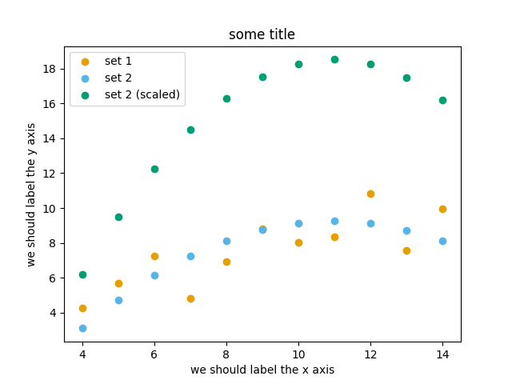

Introduction to Matplotlib
[this lesson is adapted from https://aaltoscicomp.github.io/python-for-scicomp/data-visualization/]
Why Matplotlib?
Matplotlib is perhaps the most popular Python plotting library.
Many libraries build on top of Matplotlib (example: Seaborn).
MATLAB users will feel familiar.
Even if you choose to use another library, chances are high that you need to adapt a Matplotlib plot of somebody else.
Libraries that are built on top of Matplotlib may need knowledge of Matplotlib for custom adjustments.
However it is a relatively low-level interface for drawing (in terms of abstractions, not in terms of quality) and does not provide statistical functions. Some figures require typing and tweaking many lines of code.
Many other visualization libraries exist with their own strengths, it is also a matter of personal preferences.
Getting started with Matplotlib
We can start in a Jupyter Notebook since notebooks are typically a good fit for data visualizations. But if you prefer to run this as a script, this is also OK.
Let us create our first plot using
subplots(),
scatter, and some other methods on the
Axes object:
import matplotlib.pyplot as plt
# this is dataset 1 from
# https://en.wikipedia.org/wiki/Anscombe%27s_quartet
data_x = [10.0, 8.0, 13.0, 9.0, 11.0, 14.0, 6.0, 4.0, 12.0, 7.0, 5.0]
data_y = [8.04, 6.95, 7.58, 8.81, 8.33, 9.96, 7.24, 4.26, 10.84, 4.82, 5.68]
fig, ax = plt.subplots()
ax.scatter(x=data_x, y=data_y, c="#E69F00")
ax.set_xlabel("we should label the x axis")
ax.set_ylabel("we should label the y axis")
ax.set_title("some title")
# uncomment the next line if you would like to save the figure to disk
# fig.savefig("my-first-plot.png")

This is the result of our first plot.
When running a Matplotlib script on a remote server without a
“display” (e.g. compute cluster), you may need to add the
matplotlib.use call:
import matplotlib.pyplot as plt
matplotlib.use("Agg")
# ... rest of the script
Exercise: First plot
Exercise Matplotlib-1: extend the previous example (15 min)
Extend the previous plot by also plotting this set of values but this time using a different color (
#56B4E9):# this is dataset 2 data2_y = [9.14, 8.14, 8.74, 8.77, 9.26, 8.10, 6.13, 3.10, 9.13, 7.26, 4.74]
Then add another color (
#009E73) which plots the second dataset, scaled by 2.0.# here we multiply all elements of data2_y by 2.0 data2_y_scaled = [y * 2.0 for y in data2_y]
Try to add a legend to the plot with
matplotlib.axes.Axes.legend()and searching the web for clues on how to add labels to each dataset. You can also consult this great quick start guide.At the end it should look like this one:

Experiment also by using named colors (e.g. “red”) instead of the hex-codes.
Solution
import matplotlib.pyplot as plt
# this is dataset 1 from
# https://en.wikipedia.org/wiki/Anscombe%27s_quartet
data_x = [10.0, 8.0, 13.0, 9.0, 11.0, 14.0, 6.0, 4.0, 12.0, 7.0, 5.0]
data_y = [8.04, 6.95, 7.58, 8.81, 8.33, 9.96, 7.24, 4.26, 10.84, 4.82, 5.68]
# this is dataset 2
data2_y = [9.14, 8.14, 8.74, 8.77, 9.26, 8.10, 6.13, 3.10, 9.13, 7.26, 4.74]
# here we multiply all elements of data2_y by 2.0
data2_y_scaled = [y * 2.0 for y in data2_y]
fig, ax = plt.subplots()
ax.scatter(x=data_x, y=data_y, c="#E69F00", label="set 1")
ax.scatter(x=data_x, y=data2_y, c="#56B4E9", label="set 2")
ax.scatter(x=data_x, y=data2_y_scaled, c="#009E73", label="set 2 (scaled)")
ax.set_xlabel("we should label the x axis")
ax.set_ylabel("we should label the y axis")
ax.set_title("some title")
ax.legend()
# uncomment the next line if you would like to save the figure to disk
# fig.savefig("exercise-plot.png")
Why these colors?
This qualitative color palette is opimized for all color-vision deficiencies, see https://clauswilke.com/dataviz/color-pitfalls.html and Okabe, M., and K. Ito. 2008. “Color Universal Design (CUD): How to Make Figures and Presentations That Are Friendly to Colorblind People”.
Matplotlib has two different interfaces
When plotting with Matplotlib, it is useful to know and understand that there are two approaches even though the reasons of this dual approach is outside the scope of this lesson.
The more modern option is an object-oriented interface or explicit interface (the
figandaxobjects can be configured separately and passed around to functions):import matplotlib.pyplot as plt # this is dataset 1 from # https://en.wikipedia.org/wiki/Anscombe%27s_quartet data_x = [10.0, 8.0, 13.0, 9.0, 11.0, 14.0, 6.0, 4.0, 12.0, 7.0, 5.0] data_y = [8.04, 6.95, 7.58, 8.81, 8.33, 9.96, 7.24, 4.26, 10.84, 4.82, 5.68] fig, ax = plt.subplots() ax.scatter(x=data_x, y=data_y, c="#E69F00") ax.set_xlabel("we should label the x axis") ax.set_ylabel("we should label the y axis") ax.set_title("some title")
The more traditional option mimics MATLAB plotting and uses the pyplot interface or implicit interface (
pltcarries the global settings):import matplotlib.pyplot as plt # this is dataset 1 from # https://en.wikipedia.org/wiki/Anscombe%27s_quartet data_x = [10.0, 8.0, 13.0, 9.0, 11.0, 14.0, 6.0, 4.0, 12.0, 7.0, 5.0] data_y = [8.04, 6.95, 7.58, 8.81, 8.33, 9.96, 7.24, 4.26, 10.84, 4.82, 5.68] plt.scatter(x=data_x, y=data_y, c="#E69F00") plt.xlabel("we should label the x axis") plt.ylabel("we should label the y axis") plt.title("some title")
When searching for help on the internet, you will find both approaches, they can also be mixed. Although the pyplot interface looks more compact, we recommend to learn and use the object oriented interface.
Why do we emphasize this?
One day you may want to write functions which wrap
around Matplotlib function calls and then you can send Figure and Axes
into these functions and there is less risk that adjusting figures changes
settings also for unrelated figures created in other functions.
When using the pyplot interface, settings are modified for the entire
matplotlib.pyplot package. The latter is acceptable for simple scripts but may yield
surprising results when introducing functions to enhance/abstract Matplotlib
calls.
Styling and customizing plots
Before you customize plots “manually” using a graphical program, please consider how this affects reproducibility.
Try to minimize manual post-processing. This might bite you when you need to regenerate 50 figures one day before submission deadline or regenerate a set of figures after the person who created them left the group.
Matplotlib and also all the other libraries allow to customize almost every aspect of a plot.
It is useful to study Matplotlib parts of a figure so that we know what to search for to customize things.
Matplotlib cheatsheets: https://github.com/matplotlib/cheatsheets
You can also select among pre-defined themes/ style sheets with
use, for instance:plt.style.use('ggplot')
Exercises: Styling and customization
Exercise Customization-1: log scale in Matplotlib (15 min)
In this exercise we will learn how to use log scales.
To demonstrate this we first fetch some data to plot:
import pandas as pd url = ( "https://raw.githubusercontent.com/plotly/datasets/master/gapminder_with_codes.csv" ) gapminder_data = pd.read_csv(url).query("year == 2007") gapminder_data
Try the above snippet in a notebook and it will give you an overview over the data.
Then we can plot the data, first using a linear scale:
import matplotlib.pyplot as plt fig, ax = plt.subplots() ax.scatter(x=gapminder_data["gdpPercap"], y=gapminder_data["lifeExp"], alpha=0.5) ax.set_xlabel("GDP per capita (PPP dollars)") ax.set_ylabel("Life expectancy (years)")
This is the result but we realize that a linear scale is not ideal here:

Your task is to switch to a log scale and arrive at this result:

What does
alpha=0.5do?
Solution
See ax.set_xscale().
fig, ax = plt.subplots()
ax.scatter(x=gapminder_data["gdpPercap"], y=gapminder_data["lifeExp"], alpha=0.5)
ax.set_xscale("log")
ax.set_xlabel("GDP per capita (PPP dollars)")
ax.set_ylabel("Life expectancy (years)")
alphasets transparency of points.
Exercise Customization-2: preparing a plot for publication (15 min)
Often we need to create figures for presentation slides and for publications but both have different requirements: for presentation slides you have the whole screen but for a figure in a publication you may only have few centimeters/inches.
For figures that go to print it is good practice to look at them at the size they will be printed in and then often fonts and tickmarks are too small.
Your task is to make the tickmarks and the axis label font larger, using Matplotlib parts of a figure and web search, and to arrive at this:

Solution
See ax.tick_params.
fig, ax = plt.subplots()
ax.scatter(x="gdpPercap", y="lifeExp", alpha=0.5, data=gapminder_data)
ax.set_xscale("log")
ax.set_xlabel("GDP per capita (PPP dollars)", fontsize=15)
ax.set_ylabel("Life expectancy (years)", fontsize=15)
ax.tick_params(which="major", length=10)
ax.tick_params(which="minor", length=5)
ax.tick_params(labelsize=15)
Matplotlib and pandas DataFrames
In the above exercises we have sent individual columns of the gapminder_data DataFrame
into ax.scatter() like this:
fig, ax = plt.subplots()
ax.scatter(x=gapminder_data["gdpPercap"], y=gapminder_data["lifeExp"], alpha=0.5)
It is possible to do this instead and let Matplotlib “unpack” the columns:
fig, ax = plt.subplots()
ax.scatter(x="gdpPercap", y="lifeExp", alpha=0.5, data=gapminder_data)
Other input types are possible. See Types of inputs to plotting functions.